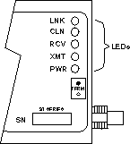

Operating Documentation
Direction 5114045-800, Rev# 10
LightSpeed 4.X Service Information (Advanced)
Operating Documentation |
The CTP100T adapter uses Cabletron System’s built-in visual diagnostic and status monitoring system, LANVIEW. LANVIEW LEDs are more effective than a network monitor because networking personnel can quickly scan the LEDs to diagnose network problems and determine which node or segment is faulty.
The following discusses the function and purpose of each CTP100T LANVIEW LED shown below.
Illustration 1: LANVIEW LEDs

When this green LED is ON, a link has been established between the CTP100T adapter and the device at the other end of the twisted pair segment. It remains on as long as the link is maintained.
If no data has been sent for 16 ms, a positive link test pulse of 100 ns is sent onto the transmit link of the twisted pair cable. The link pulses are received by the CTP100T adapter and checked to determine if they are occurring at the correct rate, polarity and pulse shape. If no pulses are received or the pulses are not correct, the transceiver enters the Link Fail State and the LED goes off. The CTP100T adapter will not receive or transmit data until the link is restored by receiving a correct link test pulse or a valid packet. If the polarity is reversed on the twisted pair segment receive link, the Link LED flashes, indicating that this condition exists. The segment should be removed from the module and the wiring corrected.
This red LED flashes when the CTP100T adapter detects a collision condition. The frequency of the flashes may increase as network activity increases, since more collisions are likely to occur. The flash of the LED is pulse-stretched for viewing effect. A solid light indicates a jabber condition.
This yellow LED flashes when the CTP100T adapter receives a data packet from the coaxial segment and transmits it on the twisted pair segment. The flash of the LED is pulse-stretched for viewing effect. The LED flashes when there is traffic on the segment, even if the data is not intended for the devices attached to the twisted pair segment on the other side of the CTP100T adapter.
This green LED flashes when a data packet is transmitted on the thin-net coaxial segment by the device connected to the CTP100T RJ45 port. The LED’s flash is pulse-stretched for viewing effect.
This green LED is ON when the CTP100T adapter is receiving power from the external (wall) transformer.